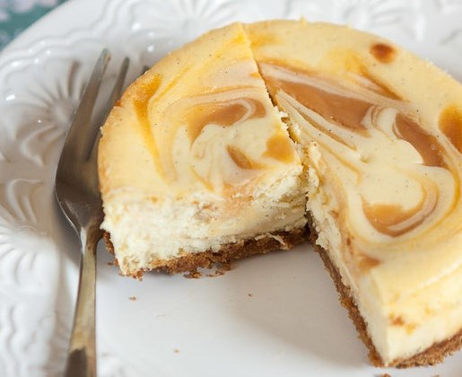

Vanilla Cheesecake Recipe
A vanilla cheesecake recipe based on one from "Taste of Home", because I can't bake; the ingredients in this recipe may be modified to personal preference, but please don't burn
your house down whilst doing so. The webpage author does not take responsibility for any burnt graham crackers that may arise from this,
but this recipe is easy enough for you not to.
_________________

O o o o o o o O
Ingredients List
- 2 cups graham cracker crumbs
- 1/2 melted butter
- 1/2 cup sugar
- 3 tbsp vanilla extract
- 1/8 tsp salt
- 4 large room temperature eggs, lightly beaten
- 4 packages of softened cream cheese (8 oz each)
Methods & Steps
- Preheat your oven to 325 degrees Fahrenheit. While that's going, mix your graham crumbs, butter, and sugar, and paste onto the bottom and a little bit up
of a greased pan. (9 inches; adjust recipe when necessary.)
- In another bowl, begin beating cream cheese and eggs until it turns into a smooth texture; beat in vanilla and salt afterward, then pour it into
the graham-coated pan and place a baking sheet on top.
- Place into the oven, and bake for about an hour--keep an eye out, make sure the cheesecake is taken out just before the center is set.
Wear oven mittens, for safety.
- Once taken out, loosen the edges of the cheesecake with a knife or other similar material. Let it cool for around an hour, and then refrigerate it overnight.
O o o o o o o O
This is based on a recipe for a simple vanilla cheesecake that I found online, to which the original is linked here.
_____________
(This has nothing to do with the cheesecake webpage, but I wanted to link the page with CSS here so I could see it.)